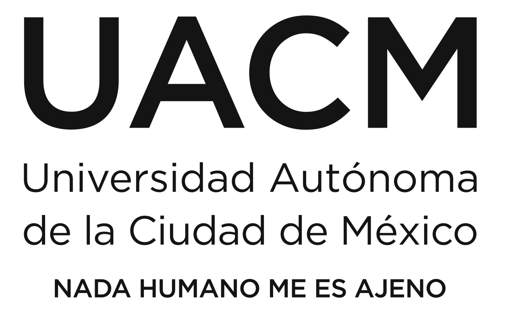

Cel. 5577905820 / Tel. 57444764
Domicilio: C Belisario Domínguez 78 R108, Col Centro,
C.P 06000, Del Cuauhtémoc, CMDX
Fecha de Nacimiento: 1994/11/01
Edad: 30 años
La oportunidad de crecer en el ámbito laboral, personal e intelectual, poder desarrollarme demostrado mis habilidades y aptitudes, culminar mi licenciatura y llevar a cabo mis conocimientos en el área requerida.
| 2022 -actualmente | Lic. Ingeniería de Software/ 6° semestre (Universidad Autónoma de la Ciudad México) |  |
| 2019-2022 | Lic. En Gestión y Administración Pyme/ 3° semestre (Universidad Abierta y a Distancia de México) |
Inglés escrito- 50%